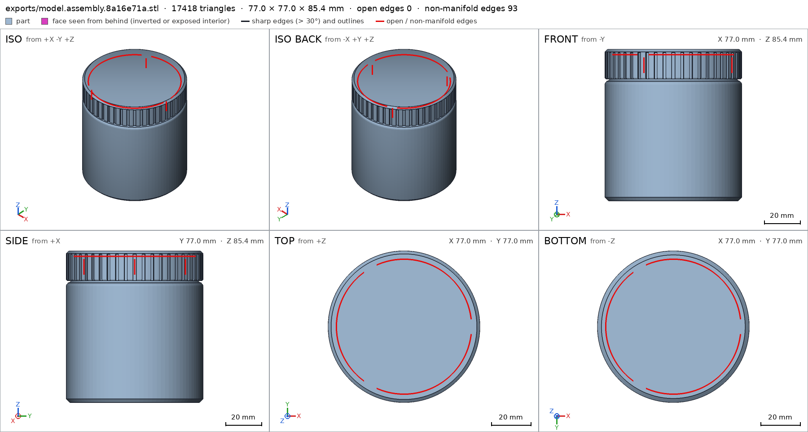
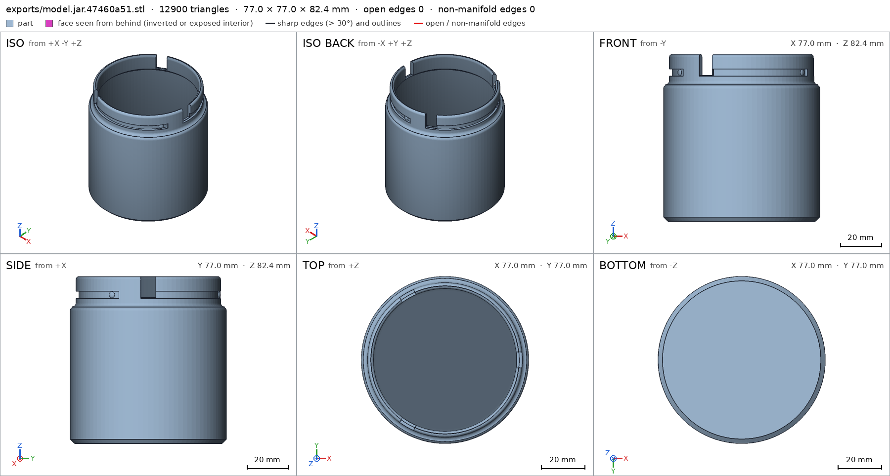
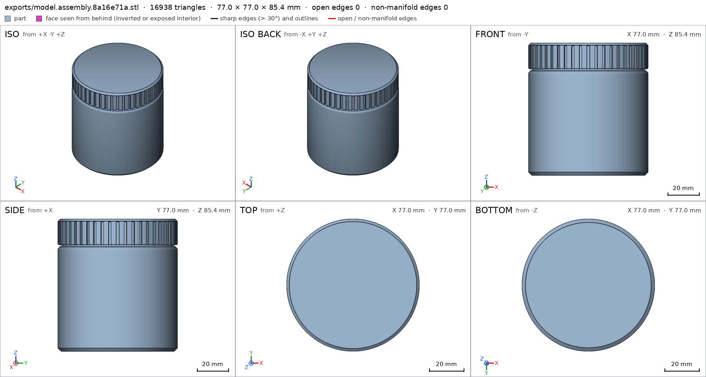
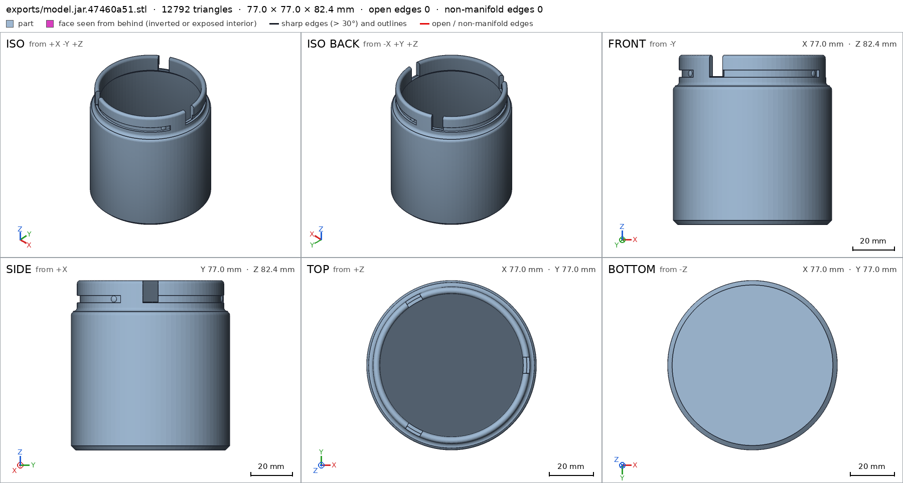
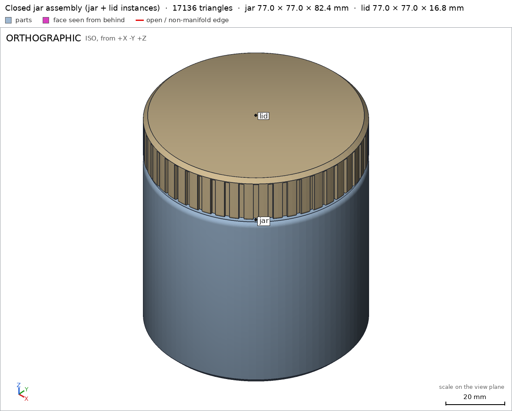
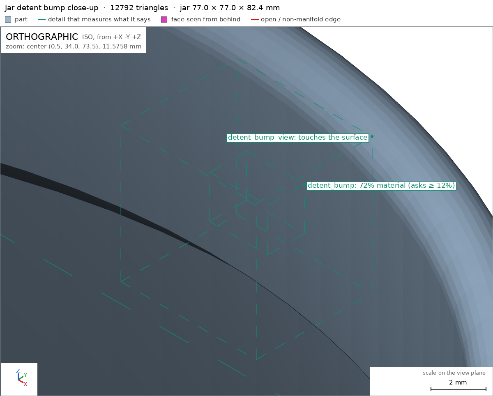
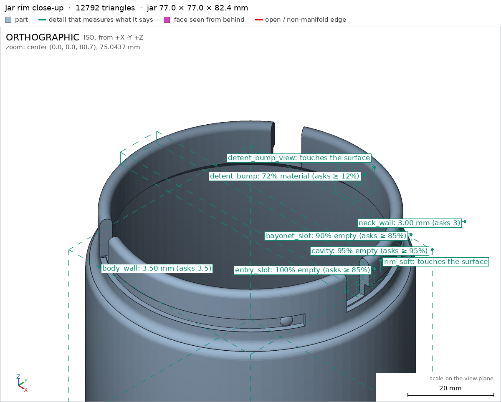
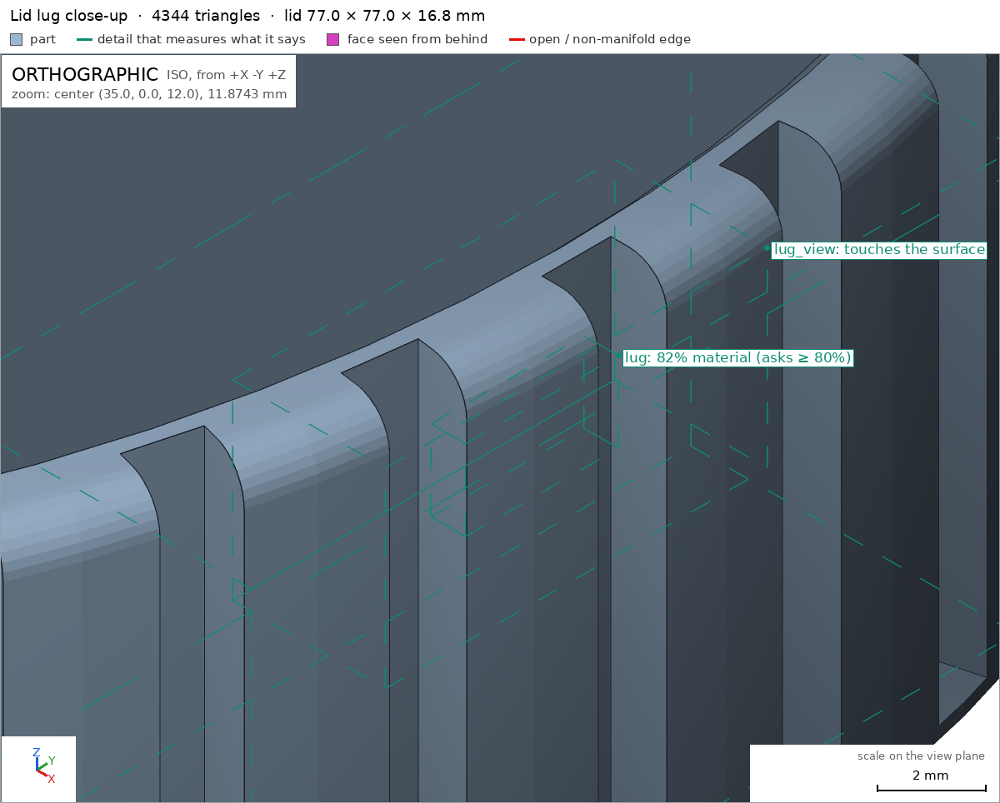
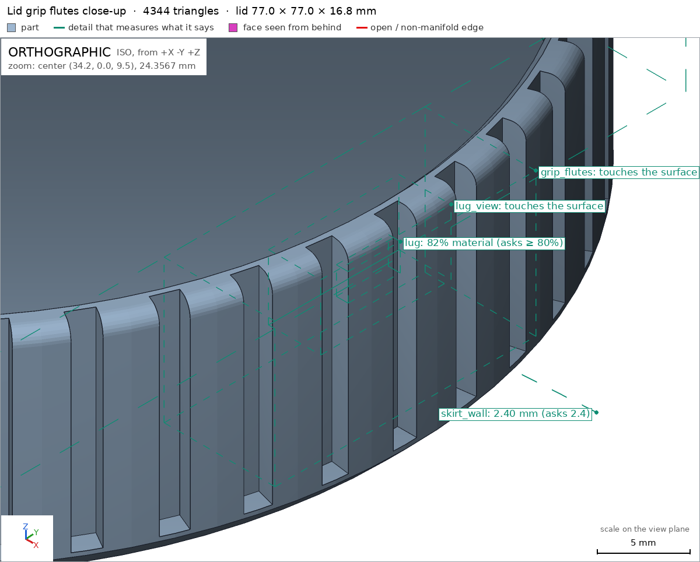

Desk jar with a bayonet lid
Request
I want a small storage jar for my desk (pens, SD cards, odds and ends): a jar and a lid that locks with a bayonet, a quarter turn, no threads.
- Inside the jar: about 70 mm across and 80 mm deep.
- The lid has lugs that drop into slots on the jar's neck and ride along them as it turns. At the end of the turn a small bump should hold the lid so it does not open on its own.
- I print in PETG on a Bambu Lab A1 with a 0.4 mm nozzle. Both parts must print without supports; give the lugs and slots the clearance PETG needs to turn by hand.
- Walls and floor at least 1.6 mm.
- It sits on a desk, so I want it to look good: soft edges, no sharp corners, and the lid flush with the jar's outside when it is closed.
Show me the closed jar as the assembly, and the lid going on and turning to lock as its motion.
Gates at every iteration
| 5 | 10 | 15 | 20 | 25 | |||||||||||||||||||||||||
| G1 compiles clean | |||||||||||||||||||||||||||||
| G2 closed meshes | |||||||||||||||||||||||||||||
| G3 assembly | |||||||||||||||||||||||||||||
| G4 motion | |||||||||||||||||||||||||||||
| G5 printable | |||||||||||||||||||||||||||||
| G7 spec held, all seen | |||||||||||||||||||||||||||||
| G8 honest close |
passedfailedpending: G8 is judged when the model closes. One column per iteration; each cell links to it.
Session
- Iteration 1USD 0.389 · 152 s · 19,356 output tokens
Designing your bayonet jar — 70×80 mm cavity, flush PETG lid with a quarter-turn detent lock, all support-free.
scad_writemodel.scad: 173 lines
- Iteration 2USD 0.019 · 10 s · 282 output tokens
First pass written — now exporting and verifying jar, lid, and assembly to close out.
scad_compileok=True, 3 echo, 0 warnings, 0 failed asserts, 0 errorsscad_exportok=True, watertight=False, bodies=4, bounds=[[-38.5, -38.5, 0.0], [38.5, 38.5, 82.4]], spec FAILS, sheet renders/sheet-003.pngscad_exportok=True, watertight=True, bodies=1, bounds=[[-38.5, -38.5, 0.0], [38.5, 38.5, 16.8]], spec ok, sheet renders/sheet-004.pngscad_exportok=True, watertight=False, bodies=5, bounds=[[-38.5, -38.5, 0.0], [38.5, 38.5, 85.4]], spec ok, sheet renders/sheet-005.png
- Iteration 3USD 0.092 · 25 s · 2,080 output tokens
scad_patchmodel.scad line 63: 168 linesscad_patchmodel.scad line 110: 168 lines
- Iteration 4USD 0.029 · 11 s · 141 output tokens
scad_exportok=True, watertight=False, bodies=4, bounds=[[-38.5, -38.5, 0.0], [38.5, 38.5, 82.4]], spec FAILS, sheet renders/sheet-008.pngscad_exportok=True, watertight=False, bodies=5, bounds=[[-38.5, -38.5, 0.0], [38.5, 38.5, 85.4]], spec ok, sheet renders/sheet-009.png
scad_export, call 8 
scad_export, call 9 - Iteration 5USD 0.054 · 19 s · 982 output tokens
Jar still shows 4 bodies with bad edges at the rim — diagnosing which fragments those are before fixing.
run_pythonexit=1, 1.197 s, stdout 292 B, files +/~/- 0/0/0
- Iteration 6USD 0.061 · 21 s · 2,144 output tokens
scad_patchmodel.scad line 29: 171 linesscad_patchmodel.scad line 39: 170 lines
- Iteration 7USD 0.012 · 11 s · 163 output tokens
scad_patchmodel.scad line 51: 173 lines
- Iteration 8USD 0.020 · 14 s · 729 output tokens
scad_patchmodel.scad line 51: 170 linesrun_pythonexit=0, 0.186 s, stdout 794 B, files +/~/- 0/0/0
- Iteration 9USD 0.011 · 10 s · 60 output tokens
scad_exportok=True, watertight=False, bodies=1, bounds=[[-38.5, -38.5, 0.0], [38.5, 38.5, 82.4]], spec FAILS, sheet renders/sheet-016.png
- Iteration 10USD 0.034 · 15 s · 620 output tokens
scad_patchmodel.scad line 62: 170 lines
- Iteration 11USD 0.016 · 11 s · 123 output tokens
scad_exportok=True, watertight=True, bodies=1, bounds=[[-38.5, -38.5, 0.0], [38.5, 38.5, 82.4]], spec ok, sheet renders/sheet-018.pngscad_exportok=True, watertight=True, bodies=2, bounds=[[-38.5, -38.5, 0.0], [38.5, 38.5, 85.4]], spec ok, sheet renders/sheet-019.png
- Iteration 12USD 0.038 · 11 s · 162 output tokens
interference_check2 instances, 0 overlaps, G3 2 problems, G4 1, G5 0, 11.11 s- G3the instance jar says it is the part 'jar', which is neither a printable option of the part selector ([]) nor 'external'
- G3the instance lid says it is the part 'lid', which is neither a printable option of the part selector ([]) nor 'external'
- G4assembly_order, step 2: turning 90° into place, lid hits jar -7.438° before the end (4.099 mm³)
printability_reportzones=13, undeclared=4, fits the bed=Trueprintability_reportzones=3, undeclared=0, fits the bed=True
- Iteration 13USD 0.039 · 12 s · 468 output tokens
scad_patchmodel.scad line 68: 170 linesscad_patchmodel.scad line 103: 172 lines
- Iteration 14USD 0.016 · 10 s · 367 output tokens
scad_patchmodel.scad line 67: 172 linesscad_patchmodel.scad line 116: 172 lines
- Iteration 15USD 0.177 · 5 s · 123 output tokens
scad_exportok=True, watertight=True, bodies=4, bounds=[[-38.5, -38.5, 0.0], [38.5, 38.5, 82.4]], spec FAILS, sheet renders/sheet-027.pngscad_exportok=True, watertight=True, bodies=2, bounds=[[-38.5, -38.5, 0.0], [38.5, 38.5, 85.4]], spec ok, sheet renders/sheet-028.png

scad_export, call 27 
scad_export, call 28 - Iteration 16USD 0.138 · 14 s · 317 output tokens
run_pythonexit=0, 0.965 s, stdout 262 B, files +/~/- 0/0/0
- Iteration 17USD 0.274 · 91 s · 11,580 output tokens
scad_patchmodel.scad line 67: 172 linesscad_patcherror: old appears 0 times in model.scad; it must appear exactly once. Copy the exact text of the file, with its indentation.scad_patchmodel.scad line 45: 172 linesscad_patchmodel.scad line 111: 172 lines
- Iteration 18USD 0.100 · 10 s · 53 output tokens
run_shellexit=0, 0.004 s, stdout 706 B, files +/~/- 0/0/0
- Iteration 19USD 0.014 · 11 s · 224 output tokens
scad_patchmodel.scad line 116: 172 lines
- Iteration 20USD 0.012 · 11 s · 186 output tokens
scad_exportok=True, watertight=True, bodies=1, bounds=[[-38.5, -38.5, 0.0], [38.5, 38.5, 82.4]], spec ok, sheet renders/sheet-036.pngscad_exportok=True, watertight=True, bodies=1, bounds=[[-38.5, -38.5, 0.0], [38.5, 38.5, 16.8]], spec okscad_exportok=True, watertight=True, bodies=1, bounds=[[-38.5, -38.5, 0.0], [38.5, 38.5, 85.4]], spec ok, sheet renders/sheet-038.png

scad_export, call 36 scad_export, call 38 - Iteration 21USD 0.047 · 13 s · 104 output tokens
printability_reportzones=10, undeclared=0, fits the bed=Trueinterference_check2 instances, 1 overlaps, G3 3 problems, G4 0, G5 0, 0.98 s- G3the instance jar says it is the part 'jar', which is neither a printable option of the part selector ([]) nor 'external'
- G3the instance lid says it is the part 'lid', which is neither a printable option of the part selector ([]) nor 'external'
- G3jar and lid overlap 2.828 mm³, 0.239 mm thick on average, in [[-31.154, -19.121, 72.2], [30.582, 35.192, 73.572]]
- Iteration 22USD 0.071 · 22 s · 1,751 output tokens
Assembly order and motion now pass; the closed-seat overlap is the 0.2mm detent press — declaring it as a fit, then running the final visual checks.
scad_patchmodel.scad line 159: 172 linesinterference_check2 instances, 0 overlaps, G3 2 problems, G4 0, G5 0, 1.03 s- G3the instance jar says it is the part 'jar', which is neither a printable option of the part selector ([]) nor 'external'
- G3the instance lid says it is the part 'lid', which is neither a printable option of the part selector ([]) nor 'external'
- spec movedassembly: the spec moved toward what the mesh already measured: interference jar / lid from not declared to permitted (lug tips press 0.2mm (0.24 measured) against the detent bumps in the locked seat), the mesh measures 2.828 mm³, 0.239 mm thick (the overlap was already there and the geometry did not remove it). That way those checks pass without the part changing. If the spec was badly posed against the request, that is fine: say so in the close, with the reason (once per part is enough). If not, fix the geometry.
render_viewrenders/view-043.png: highlightrender_viewrenders/view-044.png: zoom, highlightrender_viewrenders/view-045.png: zoom, highlightrender_viewrenders/view-046.png: zoom, highlightrender_viewrenders/view-047.png: zoom, highlight

render_view, call 43 
render_view, call 44 
render_view, call 45 
render_view, call 46 
render_view, call 47 - Iteration 23USD 0.085 · 17 s · 649 output tokens
scad_patcherror: After an image, confirm with numbers before changing the .scad: confirm it with numbers before fixing it: mesh_report, scad_export, printability_report, interfe
- Iteration 24USD 0.045 · 12 s · 52 output tokens
mesh_reportwatertight=True, bodies=1, bounds=[[-38.5, -38.5, 0.0], [38.5, 38.5, 82.4]]
- Iteration 25USD 0.014 · 11 s · 99 output tokens
scad_patchmodel.scad line 5: 172 lines
- Iteration 26USD 0.015 · 10 s · 186 output tokens
scad_exportok=True, watertight=True, bodies=1, bounds=[[-38.5, -38.5, 0.0], [38.5, 38.5, 82.4]], spec okscad_exportok=True, watertight=True, bodies=1, bounds=[[-38.5, -38.5, 0.0], [38.5, 38.5, 16.8]], spec okscad_exportok=True, watertight=True, bodies=1, bounds=[[-38.5, -38.5, 0.0], [38.5, 38.5, 85.4]], spec ok
- Iteration 27USD 0.151 · 6 s · 70 output tokens
interference_check2 instances, 0 overlaps, G3 0 problems, G4 0, G5 0, 1.54 s
- Iteration 28USD 0.071 · 11 s · 147 output tokens
printability_reportzones=3, undeclared=0, fits the bed=Truerender_viewrenders/view-056.png: iso
- Iteration 29USD 0.061 · 16 s · 1,371 output tokensaccepted
Done — a two-part desk jar in
model.scad(part = jar / lid / assembly, default shows the closed assembly).Design. Jar: 77 mm outside, cavity 70 mm across × 80 mm deep (floor at 2.4 mm, cavity floor-to-rim exactly 80), neck with three bayonet L-slots (vertical entries open at the rim, 102°-long grooves), and a detent bump at the end of each groove. Lid: prints upside-down on its closed top face, skirt (2.4 mm wall) with three inward lugs and shallow grip flutes that stay inside the 38.5 mm radius, so when closed it is flush with the jar body — total closed height 85.4 mm. Lugs run with 0.5 mm radial and 0.7 mm axial clearance; at the locked seat each lug presses 0.24 mm against its detent bump, which is what holds the lid against drifting open. Everything has fillets/chamfers (2–3 mm), no sharp corners. To use: drop the lugs into the entries, turn a quarter turn until you feel the detent click.
Verified (final exports + interference check, all green):
- Jar mesh: watertight, 1 body, 0 bad edges, bounds 77×77×82.4 jar; walls/floor measured jar/body_wall 3.5 mm, jar/neck_wall 3.0 mm, jar/floor 2.4 mm (all ≥ 1.6), cavity void jar/cavity, groove jar/bayonet_slot and entry jar/entry_slot empty as specified, detent jar/detent_bump present and seen up close jar/detent_bump_view, rim fillet jar/rim_soft, bed face jar/bottom 4182 mm².
- Lid mesh: watertight, 1 body, bounds 77×77×16.8 lid; lid/skirt_wall and lid/top_wall 2.4 mm, lugs lid/lug present and seen close lid/lug_view, flutes lid/grip_flutes, bed face lid/top_face 4298 mm².
- No supports on an A1: jar overhangs only inside the declared groove-bridging zone plus the 45° shoulder ring, lid only its lug chamfers G5.
- Assembly: instances congruent with the parts, one group, bounds 77×77×85.4 and desk face assembly/desk assembly; the quarter-turn motion sweeps collision-free except the declared detent flex bayonet_lock_turn, and the lid drops on and turns into place in the declared order assembly_order.
Not verified: real PETG behaviour — whether the 0.24 mm detent press gives the click you want and survives repeated use, and whether the modelled 0.5/0.7 mm clearances suit your printer's calibration (PETG varies; scale the lid 101 % if the first print binds). Strength, sealing, and looks are also unmeasured.
Spec adjustments to disclose: I corrected the neck-wall spec to the true 3.0 mm after fixing a rim-fillet centring error (wall is above the 1.6 mm minimum either way); moved/shrunk the detent and slot measurement boxes when the bump was relocated to the groove's locked end; added the three overhang zones above; and declared the locked-seat lug–bump press (2.83 mm³, 0.24 mm thick) as an allowed interference rather than removing it, because that press is the requested "bump holds the lid" feature, within the 0.3 mm press-fit allowance.


Final verification
Source
model.scad
// Desk jar with bayonet lid - PETG, Bambu Lab A1, 0.4 nozzle, no supports
// Dimensions in mm.
/* [Part] */
part = "assembly"; // [jar, lid, assembly]
/* [Dimensions] */
inner_r = 35; // 70 mm main cavity across
inner_depth = 80; // cavity depth
floor_t = 2.4; // >= 1.6
body_r = 38.5; // jar outside radius (77 mm across)
neck_r = 35.6; // bayonet neck outside radius
neck_inner_r = 33; // neck opening radius (66 mm clear opening)
neck_start = 67.4; // z where body steps to neck
rim_z = 82.4; // floor_t + inner_depth = 2.4 + 80
slot_z = 73.4; // bayonet horizontal slot centre height
slot_w = 3.6; // axial slot width
slot_floor_r = 34.2; // groove floor radius (1.4 deep groove, 1.2 wall behind it)
lid_r = 38.5; // flush with body_r
lid_inner_r = 36.1; // 0.5 radial clearance over neck_r
lid_h = 16.8; // lid height in print orientation
lid_top_t = 2.4;
lug_tip_r = 34.7; // 0.5 clearance to slot_floor_r
lug_z_print = 12.0; // lug centre in lid print coords
$fn = 96;
function arc2(cx, cy, r, a0, a1, n = 8) =
[for (i = [0:n]) let (a = a0 + (a1 - a0) * i / n) [cx + r * cos(a), cy + r * sin(a)]];
// arc continuing from the previous profile point (no duplicate first point)
function arc2b(cx, cy, r, a0, a1, n = 8) =
[for (i = [1:n]) let (a = a0 + (a1 - a0) * i / n) [cx + r * cos(a), cy + r * sin(a)]];
// ---------- Jar ----------
module jar_geo() {
prof = concat(
[[0, 0], [36.5, 0], [38.5, 2]], // base + 45deg bed chamfer
[[38.5, 65.4]],
arc2b(36.5, 65.4, 2, 0, 90), // shoulder outer fillet -> (36.5,67.4)
[[37.6, 67.4]],
arc2b(37.6, 69.4, 2, 270, 180), // shoulder/neck concave fillet -> (35.6,69.4)
[[35.6, 80.9]],
arc2b(34.1, 80.9, 1.5, 0, 90), // rim outer fillet -> (34.1,82.4)
arc2b(34.1, 80.9, 1.5, 90, 180), // rim inner fillet -> (32.6,80.9)
[[32.6, 72], [35, 69.6]], // 45deg inner neck expansion
[[35, 5.4]],
arc2b(32, 5.4, 3, 0, -90), // inner floor fillet -> (32,2.4)
[[0, 2.4]]
);
difference() {
rotate_extrude() polygon(prof);
// bayonet L-slots: vertical entry + horizontal quarter-turn groove, x3
for (k = [0, 120, 240]) rotate([0, 0, k]) {
// horizontal annular-sector groove, -6 .. 96 deg
translate([0, 0, slot_z - slot_w / 2])
linear_extrude(height = slot_w)
polygon(concat(
arc2(0, 0, 37.5, -6, 96, 28),
arc2(0, 0, slot_floor_r, 96, -6, 28)));
// vertical entry, open at rim
translate([34.5, 0, 78]) cube([6, 7.4, 12], center = true);
}
}
// detent bumps on groove floors, near locked end (81 deg in each slot):
// flattened spheres protruding 0.6 mm inward, embedded 1.2 mm into the wall
for (k = [0, 120, 240]) rotate([0, 0, k + 89])
translate([34.6, 0, slot_z]) scale([0.4, 1, 1]) sphere(r = 1.5, $fn = 32);
}
// ---------- Lid (print orientation: closed top face on bed, skirt up) ----------
module lid_geo() {
prof = concat(
[[0, 0], [37, 0], [38.5, 1.5]], // top face + 45deg bed chamfer
[[38.5, 15.8]],
arc2(37.5, 15.8, 1, 0, 90), // skirt rim outer fillet -> (37.5,16.8)
[[36.6, 16.8], [36.1, 16.3]], // skirt rim chamfer
[[36.1, 2.4]],
[[0, 2.4]]
);
difference() {
rotate_extrude() polygon(prof);
// shallow vertical grip flutes, within flush outer radius
for (i = [0:47]) rotate([0, 0, i * 7.5])
translate([38.0, 0, 9.3]) cube([2.0, 1.8, 15.0], center = true);
}
// bayonet lugs x3, curved tip, 45deg chamfer on print-down face
for (k = [0, 120, 240]) rotate([0, 0, k - 4.75])
rotate_extrude(angle = 9.5)
polygon([[34.7, 12.3], [34.7, 13.2], [36.3, 13.2], [36.3, 10.8]]);
}
// ---------- Specs ----------
jar_bounds = [[-38.5, -38.5, 0], [38.5, 38.5, 82.4]];
lid_bounds = [[-38.5, -38.5, 0], [38.5, 38.5, 16.8]];
if (part == "jar") {
echo(cadverify_spec = [
["bounds", jar_bounds],
["bodies", 1],
["through_holes", 0],
["support_faces", [["bottom", "-z", 3500]]],
["overhangs_allowed", [
["bayonet groove upper wall: 3.6mm wide groove bridges without support in PETG", [[-37, -37, 71.6], [37, 37, 75.2]]],
["45deg shoulder ring at z=67.4 (angle exactly at 45deg print limit, facetted ring of the shoulder/neck fillet)", [[-37.6, -37.6, 67.2], [37.6, 37.6, 67.6]]],
["rounded rim underside creases next to the entry slots at z=82.38 (tiny faceting slivers of the rim fillet)", [[-34.5, -34.5, 82.3], [34.5, 34.5, 82.4]]]
]],
["copies", 1],
["details", [
["body_wall", "thickness", [-50, 0, 40], [1, 0, 0], 3.5],
["neck_wall", "thickness", [35.36, 35.36, 78], [-0.707, -0.707, 0], 3.0],
["floor", "thickness", [10, 0, -5], [0, 0, 1], 2.4],
["cavity", "void", [[-30, -30, 20], [30, 30, 70]], 0.95],
["bayonet_slot", "void", [[23.5, 23.5, 72.5], [26.5, 26.5, 74.3]], 0.85],
["entry_slot", "void", [[34, -3, 77], [38, 3, 82]], 0.85],
["detent_bump", "material", [[-0.9, 33.5, 72.5], [2.1, 35.4, 74.7]], 0.12],
["detent_bump_view", "view", [[-3, 31, 70], [4, 37, 77]]],
["rim_soft", "view", [[-37, -6, 79], [37, 6, 82.4]]]
]]
]);
jar_geo();
}
if (part == "lid") {
echo(cadverify_spec = [
["bounds", lid_bounds],
["bodies", 1],
["through_holes", 0],
["support_faces", [["top_face", "-z", 3500]]],
["overhangs_allowed", [
["lug print-down 45deg chamfer and small lug underside", [[34, -4, 10], [37, 4, 14]]],
["lug print-down 45deg chamfer and small lug underside", [[-22, 26, 10], [-13, 35, 14]]],
["lug print-down 45deg chamfer and small lug underside", [[-22, -35, 10], [-13, -26, 14]]]
]],
["copies", 1],
["details", [
["skirt_wall", "thickness", [49.9, 3.27, 8], [-0.998, -0.065, 0], 2.4],
["top_wall", "thickness", [0, 0, -5], [0, 0, 1], 2.4],
["lid_cavity", "void", [[-30, -30, 6], [30, 30, 15]], 0.95],
["lug", "material", [[35.2, -2, 11.0], [36.1, 2, 13.1]], 0.8],
["lug_view", "view", [[33, -5, 9.5], [37, 5, 14.5]]],
["grip_flutes", "view", [[30, -10, 4], [38.5, 10, 15]]]
]]
]);
lid_geo();
}
// ---------- Assembly ----------
cadverify_only = "";
module instance(name, partname, unit = 1) {
echo(cadverify_instance = [name, partname, unit]);
if (cadverify_only == "" || cadverify_only == name) children();
}
if (part == "assembly") {
echo(cadverify_spec = [
["bounds", [[-38.5, -38.5, 0], [38.5, 38.5, 85.4]]],
["support_faces", [["desk", "-z", 3500]]],
["allowed_interferences", [["lid", "jar", "lug tips press 0.2mm (0.24 measured) against the detent bumps in the locked seat"]]],
["motions", [
["bayonet_lock_turn", ["lid"], "rotate", [0, 0, 0], [0, 0, 1], [0, -90],
["flex", [["lid", "jar", 0.7, "PETG skirt/lug flexes radially over 0.6mm detent bump at end of bayonet turn"]]]]
]],
["assembly_order", [
[["jar"], [0, 0, 0]],
[["lid"], [0, 0, -1], ["rotate", [0, 0, 0], [0, 0, 1], 90]]
]]
]);
instance("jar", "jar") jar_geo();
// lid print geo flipped to use orientation; rotate z 90 puts lugs at locked angle
instance("lid", "lid") translate([0, 0, 85.4]) rotate([0, 0, 90]) rotate([180, 0, 0]) lid_geo();
}